UI & Frontend Development
UI is an important aspect of frontend development, as it deals with the elements that users directly interact with. When designing the UI, it’s important to think about how color choices, overall layout, responsiveness, and interactive elements come together to make the product look appealing and easy to use. Paying attention to even the smallest detail—like button size and text alignment—can greatly improve the user’s comfort and perception of your product.
As a frontend developer, you’re crafting what is often the user’s very first impression. This initial view can significantly influence how people feel about the product going forward. An interface that’s visually engaging, straightforward to find your way through, and accessible to users of varying abilities helps build trust and encourages users to come back. By prioritizing a clean, intuitive, and inclusive design, you make sure that the experience is both welcoming and effective.
Terminology
User Experience (UX)
- UX is the process of shaping how a product feels and works from the user’s perspective. It covers everything from branding and ease of use to functionality and how well the product fits into a user’s life. By understanding user expectations and frustrations, you can refine the experience to better meet their needs and desires.
- Good UX design is necessary for fostering satisfaction and loyalty among your users. When you place the user’s journey at the heart of your design process, you’re more likely to spot areas where users might struggle or lose interest. Addressing these issues early leads to a more polished product that keeps users engaged and happy.
User Interface (UI)
- The UI is the collection of on-screen elements—like buttons, menus, and icons—that users interact with. It’s how users and the system communicate. A thoughtful UI considers how the design looks, how easy it is to learn, and whether it helps users accomplish tasks without confusion or unnecessary steps.
- The design of the UI often determines whether someone continues to explore a product or abandons it. An aesthetically pleasing interface with well-organized content and intuitive controls helps users feel confident and in control. Conversely, a messy or convoluted UI can create frustration and turn users away.
User Flow
- User flow visually maps out the step-by-step path a user might take to complete a goal, such as making a purchase or signing up for a newsletter. It highlights the points where users make decisions, input information, or move to the next screen or page.
- By understanding how users progress through your product, you can identify potential friction or stumbling blocks. Optimizing these flows makes it easier for users to accomplish their tasks, improving overall satisfaction and likelihood of return visits.
Minimum Viable Product (MVP)
- An MVP is a version of your product with only the core features needed to function. It helps you test real-world usability and gather feedback early without investing time and resources into features users may not actually want.
- This approach lowers the risk of spending effort on areas that don’t resonate with your audience. Feedback from early adopters can guide you in deciding which enhancements to prioritize, allowing you to evolve the product based on real user needs rather than guesses.
Call To Action (CTA)
- A CTA is any prompt—like a button, link, or headline—that nudges users to take a specific next step. Common CTAs include “Sign Up Now,” “Add to Cart,” or “Download App.” They are designed to stand out visually and provide a clear directive.
- Effective CTAs can significantly boost conversion rates by channeling users toward an intended action. In digital marketing, well-placed and thoughtfully worded CTAs can turn casual visitors into paying customers or loyal subscribers, making them key tools in customer engagement and sales.
UI Components
Interaction contract: visuals are only one state of a control
A reusable component needs a specification of behavior as well as colors and spacing. For a button, record its label, purpose, activation behavior, default/hover/focus/disabled/busy states, available input methods, and how errors are shown. The actual browser comparison is a starting point; it is not a substitute for keyboard or assistive-technology testing.
{kind=link}
| Control | Native semantic choice | Minimum functional check |
|---|---|---|
| Navigate to another page | <a href="..."> |
Activates with Enter, exposes destination. |
| Perform an action | <button type="button"> |
Activates with Enter and Space, focus visible. |
| Submit form data | <button type="submit"> |
Validates/submits intended form. |
| Choose one of several choices | Radio group with a shared name | Arrow-key behavior, descriptive legend. |
| Choose independent options | Checkboxes | Space toggles each option. |
| Choose from a compact fixed list | Native <select> |
Works with keyboard and touch. |
An element with onclick does not automatically acquire button semantics, focusability, Space activation or accessible naming. Prefer HTML controls rather than rebuilding their entire interaction model with ARIA. Do not disable a working submit control as the only explanation of why a form is incomplete: give a discoverable explanation. A loading state must prevent accidental duplicate actions where necessary, while exposing progress and preserving a usable focus strategy.
Audit exercise: start from the live demo, unplug the mouse and traverse controls with Tab, Shift+Tab, Enter and Space. Check whether the visible focus location corresponds to the action, and test with forced colors as available. Reference: WAI-ARIA first rule.
UI components are the fundamental building blocks of any interface. They not only shape how your application looks but also how users interact with it. By choosing the right components for each task and designing them consistently, you can guide users more intuitively through your product.
Buttons
State implementation: not just four colored rectangles
<button class="save-button" type="button">Save draft</button>
<button class="save-button" type="button" disabled>
Save unavailable
</button>
<p id="save-help">Enter a title before saving.</p>.save-button { background: #1d4ed8; color: white; border: 2px solid transparent; }
.save-button:hover:not(:disabled) { background: #1e40af; }
.save-button:focus-visible { outline: 3px solid #0f172a; outline-offset: 3px; }
.save-button:disabled { background: #e2e8f0; color: #334155; cursor: not-allowed; }
@media (forced-colors: active) {
.save-button:focus-visible { outline: 3px solid Highlight; }
}The disabled control will usually be skipped by sequential Tab navigation. If people must discover why an action is unavailable, provide associated visible text, a status message, or a design where an enabled button explains the validation error on activation. For a pending network request, distinguish busy from disabled and expose the result on success/failure. Do not remove the browser focus outline without an equivalent replacement.
Try it: compare the browser screenshot with real hover and Tab behavior in the project. Simulate a monochrome view and verify that text, border and shape still distinguish states. Reference: MDN :focus-visible.
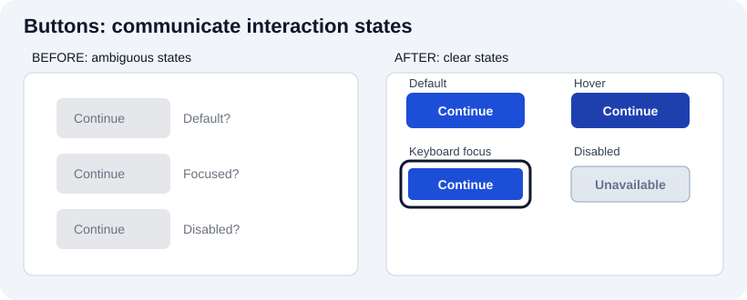
Actual browser-rendered before/after:
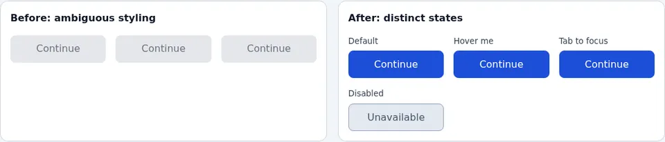
The four states must communicate more than a color change. A keyboard user needs an obvious :focus-visible indicator; a disabled control must not be the only way to explain why an action is unavailable. Try Tab and pointer hover in the interactive example, and check whether each state is conveyed without assuming everyone sees color the same way.
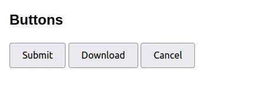
- Buttons are used to initiate actions or commands.
- Label buttons with specific, action-oriented text like "Create account", "Download", or "Cancel" so users know exactly what will happen.
- Avoid generic text such as "Click Here," which doesn’t explain the button’s purpose.
- Use distinct colors for primary actions to help them stand out, drawing user attention to critical choices.
- For smaller decisions or confirmations, concise labels like "OK", "Yes", or "No" are appropriate.
- Size buttons for comfortable tapping or clicking, especially on mobile devices where touch accuracy is crucial.
Text
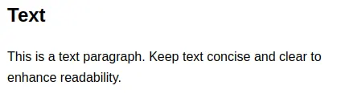
- Text is used to display read-only information.
- Keep text sections brief and clear to improve comprehension, especially for users who skim.
- Employ suitable typography (such as choosing legible fonts and optimal font sizes) to reduce eye strain.
- Organize text using headings, subheadings, and bullet points for better readability and quick scanning.
- Make sure the text color has sufficient contrast against the background so users can read it easily in different lighting conditions.
Inputs
Form errors: a concrete four-state specification

| State | Visible presentation | Accessible/behavioral requirement |
|---|---|---|
| Empty, untouched | Persistent label and optional hint | Input has a programmatic name. |
| Editing | Text remains legible; hint stays available | Don't erase the label. |
| Invalid after submit | Specific error next to the field | Message connected with aria-describedby; focus strategy. |
| Valid/submitted | Clear result or next step | Server errors still handled; no false success promise. |
<label for="email-signup">Email address</label>
<p id="email-hint">For example: name@example.com</p>
<input id="email-signup" name="email" type="email" required
aria-describedby="email-hint email-error">
<p id="email-error" role="status"></p>JavaScript can populate the error element with textContent, set aria-invalid="true" after validation fails, and focus the invalid field if appropriate. Avoid role="alert" on every keystroke: overly aggressive announcements are distracting. Native browser validation can be a useful baseline; a fully custom system must reproduce helpful messages and focus behavior. Client-side checks improve guidance but are not a security boundary. Reference: W3C form instructions and validation.

Actual browser-rendered before/after:
Before: a disappearing placeholder and a red outline leave the problem ambiguous. After: the persistent label, helper text and plain-language error explain what to fix. The working form updates text and aria-invalid; server validation remains necessary. Use <fieldset><legend>…</legend> for related radio buttons and checkboxes, and connect helper/error text with aria-describedby when appropriate.
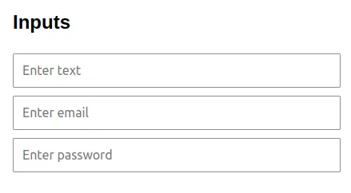
- Inputs allow users to enter data or information into the system.
- Clearly label each input field so users understand what is expected (e.g., "Email Address," "Password").
- Keep a persistent visible
<label>for every input. Placeholders can show an example (e.g., “name@example.com”), but disappear when someone types and must not replace labels or error messages. - Provide input masks or formatting aids (like automatically adding dashes in a phone number) to reduce errors.
- Display helpful error messages and validations to guide users in fixing mistakes quickly.
Lists
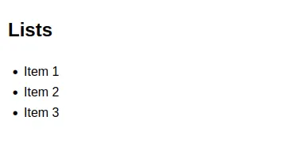
- Lists are used to display multiple pieces of related information or options.
- Ideal for showing sets of items or when you need multi-selection functionality.
- Offer sorting or filtering options when lists grow large, helping users find what they need quickly.
- Ensure list items are spaced adequately and remain easy to tap or click on mobile devices.
- Use lazy loading or pagination for very long lists to improve performance and usability.
Radio Buttons
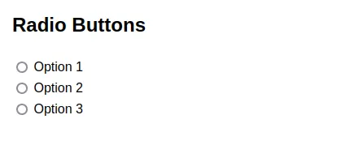
- Radio buttons let users pick at most one option from a group sharing a
name; the group may initially have no selection unless one is preselected or required. - Choose radio buttons when you want a mutually exclusive choice (e.g., selecting a single shipping method).
- Show all options clearly, and avoid requiring users to scroll to find them if possible.
- Align radio buttons vertically, especially for more than two options, to ensure clarity.
- Provide a brief description when necessary so users fully understand each option.
Comboboxes
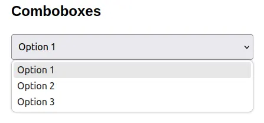
- A native
<select>provides a standard option picker; an ARIA combobox is a distinct input/popup pattern, often supporting typed input and autocomplete. Do not call every dropdown a combobox. - Useful for long lists (like countries or states) where showing all options at once isn’t practical.
- Offer a search or filter feature within the dropdown if the list is very lengthy.
- Make sure the expanded dropdown doesn’t overlap critical information.
- Label the combobox clearly so users know what type of information they’re selecting.
Checkboxes
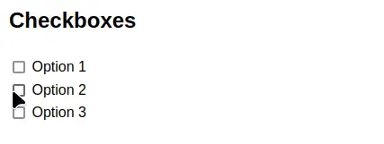
- Checkboxes allow users to select one or more options independently (e.g., selecting multiple interests or categories).
- They’re best when the choices are non-mutually exclusive, meaning users can pick several at once.
- Provide descriptions or tooltips if the meaning of each checkbox isn’t obvious.
- Line up checkboxes vertically if there are several options, making comparisons easier.
- Give clear visual feedback of the checked or unchecked state.
Menus
Responsive navigation: width, semantics, and keyboard testing
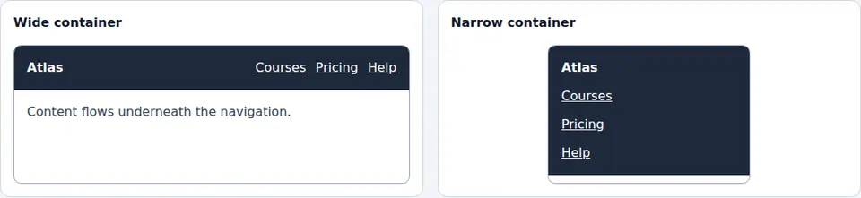
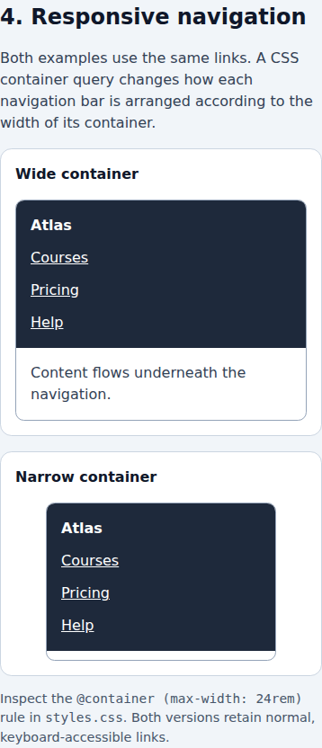
The two screenshots show that reflow can make the same set of links usable at different widths. The simplest implementation needs no custom popup: allow a <nav> to wrap or stack its links. A container query is useful when a component appears in both a narrow sidebar and a wide page, because the component responds to its available space rather than to the viewport alone.
.navigation-container { container-type: inline-size; }
.navigation { display: flex; flex-wrap: wrap; gap: 0.75rem; }
@container (max-width: 24rem) {
.navigation { flex-direction: column; align-items: flex-start; }
}The query targets descendants of .navigation-container; setting a query on an element does not allow that element's own dimensions to be styled by its own container query. For a collapsible design, implement a real button with aria-expanded, aria-controls and a clearly named panel. Closing must not strand keyboard focus inside hidden content. Test: a 320px viewport, 200% zoom, Tab through all links, open/close behavior, and browser Back navigation. Reference: MDN container queries.
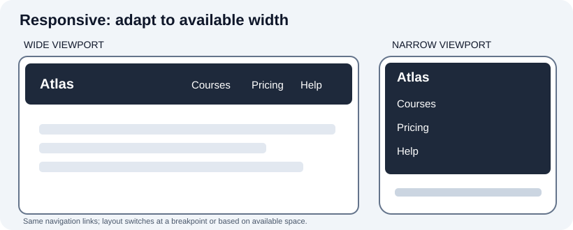
Actual browser-rendered before/after:
See the narrow-screen browser capture
{kind=link}
This diagram illustrates how layout can adapt to width; it does not mean mobile navigation needs an inaccessible custom dropdown. A simple wrapping or stacked <nav> keeps links directly reachable. For a collapsible menu, use a real <button> with an accessible name and synchronized aria-expanded, then test keyboard, focus and escape/close behavior. Compare narrow and wide viewports in the browser demo.
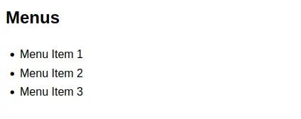
- Ordinary site navigation belongs in
<nav>with links. An application-stylemenuhas a different keyboard pattern and may present commands; do not add menu roles solely for visual styling. - Ideal for organizing less-frequent tasks or secondary features to reduce clutter.
- Structure menu items logically, using clear labels and hierarchical groupings if necessary.
- Keep nesting to a minimum to avoid confusing users with too many sub-levels.
- Incorporate icons or short labels that reflect the function or destination of each menu item.
Dialogs
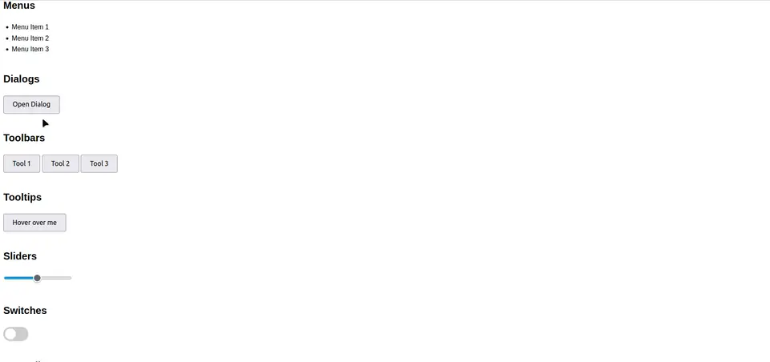
- Dialogs (also known as pop-ups or modals) demand user focus by appearing above the main interface.
- Use a dialog when you need the user to make a choice or provide information before continuing.
- Always give users a straightforward way to dismiss or close the dialog if they don’t want to proceed.
- Keep content concise to avoid overwhelming the user with excessive details.
- Ensure dialogs are accessible, focusing on keyboard navigation and screen reader compatibility.
Toolbars
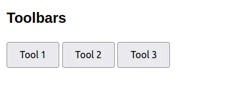
- Toolbars offer quick access to frequently used actions or settings, typically displayed in a row or column.
- Keep the toolbar uncluttered, showing only the most relevant tools to simplify the user’s workflow.
- Group related actions together so users can find what they need faster.
- Make sure the toolbar is visible and easily reachable, especially on mobile devices.
- Provide clear iconography or labels so users immediately grasp what each tool does.
Tooltips
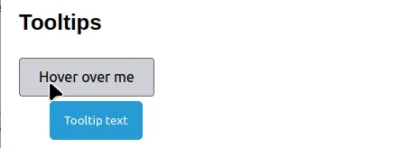
- Tooltips appear when users hover or focus on an element, offering additional information or context.
- Keep tooltip text brief to avoid blocking other important on-screen elements.
- Avoid placing tooltips in awkward positions where they might obscure the element being explained.
- Use them sparingly for clarifications rather than hiding critical information behind a hover action.
- Ensure tooltips are accessible by offering alternative text or other solutions for touch devices.
Sliders
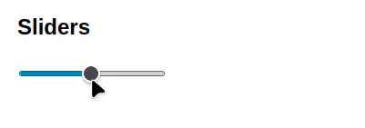
- Sliders let users pick a value (like volume or brightness) from a range by dragging a handle.
- Best for approximate selections rather than precise inputs, although showing the numeric value can help with clarity.
- Offer real-time feedback so users see the selected value change as they move the slider.
- Provide a large enough handle or “hit area” so users can drag it without frustration, especially on touch screens.
- Make sure the slider’s appearance and mechanics are intuitive, clearly indicating the minimum and maximum values.
Switches
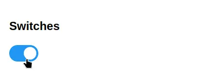
- Switches are toggles for two states, such as On/Off, Enabled/Disabled, or Active/Inactive.
- They are perfect when the user needs to quickly flip a setting without additional options.
- Provide clear indicators (like color changes or a visual toggle) to show the switch state.
- Ensure the switch is easy to tap or click, and offer immediate feedback when toggled.
- Use short labels or icons to clarify what each state represents, avoiding any ambiguity.
Accordions
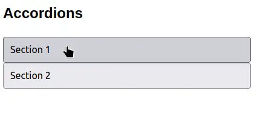
- Accordions display sections of related content in a stacked format, allowing users to expand or collapse each section.
- Great for presenting large chunks of content without cluttering the screen.
- Clearly label each accordion header so users know what is hidden within each section.
- Animate the expand/collapse smoothly to help orient users and maintain a polished feel.
- Avoid nesting accordions within each other, as it can cause confusion and make navigation cumbersome.
Tabs
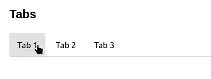
- Tabs enable you to group related content into different panels within the same view, helping avoid clutter.
- Use them when each tab represents a distinct category or function.
- Name each tab descriptively so users can quickly jump to the information they need.
- Highlight the active tab with a clear visual cue, so users know where they are.
- Keep the number of tabs manageable to avoid overwhelming the user with too many choices.
Carousels
- Carousels cycle through a series of images or content panels, often to showcase featured items or promotions.
- Useful for highlighting multiple pieces of content without taking up too much space on one screen.
- Provide simple navigation controls (like arrows or swipe gestures) and clear indicators for each slide.
- Let users control the carousel rather than auto-scrolling too quickly, preventing disorientation.
- Include descriptive text or calls to action within each slide to help users understand the content.
Breadcrumbs
- Breadcrumbs show the path a user has taken within a nested navigation structure (e.g., Home > Products > Electronics > Cameras).
- They help users understand where they are and let them backtrack to higher-level pages easily.
- Display each level in a clear and clickable format so users can navigate quickly.
- Keep breadcrumb labels succinct and consistent with the page titles.
- Use them mostly for websites or applications with deep hierarchies to prevent users from getting lost.
Modals
- Modals temporarily lock the user into a single action or piece of content until they close it or make a selection.
- They’re best used for tasks requiring immediate attention or critical decisions (like confirming a delete action).
- Always provide a clear close option, such as an “X” button or a “Cancel” link, so users aren’t stuck.
- Keep the modal content concise and relevant to avoid frustrating or overwhelming users.
- Ensure keyboard focus moves into the modal so screen readers and keyboard-only users can interact properly.
Notifications
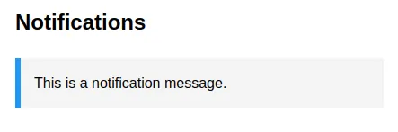
- Notifications inform users about events, updates, or changes that need their attention.
- Use them for messages that are relevant to the user’s current context, like successful form submissions or urgent alerts.
- Clearly differentiate between different notification types (e.g., success, error, warning) with color or icon choices.
- Offer a convenient way to dismiss or snooze notifications, preventing screen clutter.
- Avoid overwhelming users with too many notifications, which can lead to them being ignored or turned off.
Progress Bars
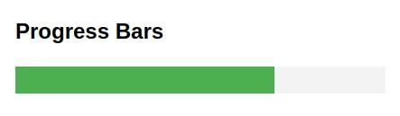
- Progress bars visually represent how far along a process is (like uploading a file or completing a form).
- They’re especially useful for actions that take longer than a second or two, reassuring users that the task is underway.
- Show the current completion percentage, or at least a sense of how close the process is to finishing.
- Use consistent styles and positioning for all progress bars across your interface to maintain familiarity.
- Ensure it’s obvious which task the progress bar corresponds to, particularly if multiple processes can occur simultaneously.
Spinners
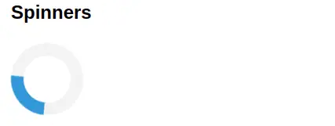
- Spinners convey that the system is busy with a short, ongoing task (like loading a page or fetching data).
- They let users know that the application hasn’t frozen and is still working.
- Keep the spinner’s design subtle and unobtrusive, yet visible enough to indicate activity.
- Use spinners judiciously to prevent user fatigue—only show them when there’s actual waiting involved.
- Pair spinners with brief text (like “Loading…”) when helpful to add clarity about what is happening.
Types of UI Design Deliverables
UI design often involves iterative processes that utilize various deliverables for visualizing, testing, and refining the user interface. The three main deliverables used during design are wireframes, prototypes, and mockups.
Wireframe
- A wireframe is a low-fidelity representation of the UI that outlines the basic structure and components. Wireframes are typically devoid of color, font choices, logos, or any real design elements. They are primarily focused on layout and functionality.
- The purpose of a wireframe is to quickly draft and communicate design ideas, navigation, and overall layout. Wireframes act as the blueprint for your project and help in aligning the team and stakeholders on the basic structure before diving into more detailed design work.
- Tools commonly used for creating wireframes include software like Balsamiq, Sketch, or even hand-drawn sketches.
Prototype
- A prototype is an interactive model that showcases how the UI will function. Prototypes can range from low-fidelity, clickable wireframes to high-fidelity simulations that closely resemble the final product.
- The purpose of a prototype is to simulate user interactions and test the flow and functionality of the design. Prototypes are essential for conducting user testing to gather feedback and validate design decisions before moving into development.
- Tools used for creating prototypes include InVision, Adobe XD, or Figma, which allow for clickable, interactive design elements.
Mockup
- A mockup is a high-fidelity, static visualization that presents the design's visual details, including colors, typography, and imagery. Unlike wireframes, mockups provide a detailed representation of the final design.
- The purpose of a mockup is to provide a realistic preview of the design's appearance and aesthetics. Mockups are used to review the visual style and details, ensuring that they align with brand guidelines and aesthetic expectations.
- Tools commonly used for creating mockups include Photoshop, Illustrator, Sketch, or similar graphic design software.
Importance of a Three-Phase Design Approach
- This approach facilitates clear understanding and agreement on requirements. Each phase serves as a step towards refining and solidifying the design, helping stakeholders and team members to stay aligned with the project’s goals.
- It aids in the identification of test cases and sets the foundation for user testing. Prototypes, in particular, are crucial for identifying potential issues and gathering user feedback, which informs further refinements.
- This approach promotes collaborative feedback from users, stakeholders, and team members to align with expectations. The collaborative process ensures that the final product is both user-friendly and meets business objectives.
Design Approaches
- Digitally, using design software or tools offers precision, easy modifications, and the ability to share and collaborate online.
- On paper, sketching or drawing by hand is often faster for initial ideation, allowing for quick exploration of ideas without the constraints of digital tools.
UI Sketching
UI sketching is an essential part of the design process where ideas are quickly drawn, usually by hand, to explore concepts and layouts. This method is useful in the early stages of user interface design.
Advantages
- UI sketching allows designers to rapidly ideate and visualize a multitude of ideas without the time investment required by digital tools. This rapid process is ideal for generating a broad range of concepts.
- Sketches provide a tangible representation early in the design process, making it easier for teams and stakeholders to understand and discuss the design concepts.
- As a visual medium, sketches can easily uncover potential design challenges such as spatial, layout, and flow issues early, allowing for quick adjustments before committing to detailed design.
- Sketches facilitate collaborative brainstorming and feedback, as they are approachable and easy to iterate upon, enabling team members to contribute ideas and feedback in real-time.
- The sketching process is inclusive and does not mandate technical expertise, allowing anyone on the team, regardless of their technical background, to participate in the design process.
Disadvantages
- The absence of coded elements in sketches limits certain functional insights. Since sketches are static and non-interactive, they cannot fully convey the interactive aspects of a UI, such as animations, transitions, or dynamic behaviors. This limitation can lead to gaps in understanding how the design will function in practice.
- Some intricate design details or issues may be overlooked in sketches due to their simplicity. Finer details of the design, such as pixel-level accuracy, color schemes, or typography, are often crucial for the final look and feel of the product.
- Sketches can sometimes be ambiguous or open to different interpretations, leading to misunderstandings about the design intent. This issue is particularly significant when sketches are shared without the creator present to provide context.
- Sketches might not always be client-ready. For presenting to clients or stakeholders who are used to seeing polished designs, sketches might appear too rough or unfinished and may not effectively communicate the final vision of the product.
- Sketches have limited reusability. Unlike digital files, sketches can be hard to modify extensively or repurpose for future projects. Changes often require redrawing the sketch, which can be time-consuming.
UI Kits
UI kits are collections of pre-made user interface components, such as buttons, check boxes, sliders, and more. They provide a consistent set of design elements that can be reused across different parts of a project. Here are some notable UI kits:
| UI Kit | Description | Primary Technology | Customization | Use Case | Community Support | Reference |
|---|---|---|---|---|---|---|
| Ant Design | A design system for enterprise-level products. It creates an efficient and enjoyable work experience with a set of high-quality React components. | React | High, with theming and component overrides | Enterprise applications | Strong | Ant Design |
| Material UI | Provides a robust, customizable, and accessible library of foundational and advanced components, enabling you to build your own design system and develop React applications faster. | React | Extensive, with customizable themes | General-purpose, highly customizable | Very strong | Material UI |
| Chakra UI | A simple, modular, and accessible component library that gives you all the building blocks you need to build your React applications with speed. | React | Easy theming and component customization | Speedy development, accessibility focus | Growing | Chakra UI |
| Bootstrap | A popular HTML, CSS, and JS library for developing responsive, mobile-first projects on the web. It's known for its extensive components and utility classes. | HTML, CSS, JS | Moderate, with Sass variables | Responsive web design, mobile-first apps | Extensive | Bootstrap |
| Semantic UI | A framework that helps create beautiful, responsive layouts using human-friendly HTML. It focuses on using language that naturally describes content. | HTML, CSS, JS | High, with theming capabilities | Beautiful, semantic designs | Moderate | Semantic UI |
| Foundation | A responsive front-end framework that makes it easy to design beautiful responsive websites, apps, and emails. | HTML, CSS, JS | High, with Sass customization | Advanced responsive design | Moderate | Foundation |
| Bulma | A modern CSS framework based on Flexbox. It is fully responsive and provides a range of components and layout options. | CSS | Moderate, using Sass variables | Flexbox-based layouts | Growing | Bulma |
| Tailwind CSS | A utility-first CSS framework for rapidly building custom designs. It focuses on low-level utility classes to construct unique designs without writing custom CSS. | CSS | Extensive, via configuration file | Custom design systems | Very strong | Tailwind CSS |
| Element UI | A Vue 2.0-based component library for developers, designers, and product managers, providing a consistent look and feel for web applications. | Vue.js | High, with customizable themes | Vue.js applications | Moderate | Element UI |
| Vuetify | A Vue.js framework that provides a wide array of components and tools for building beautiful and functional web applications. | Vue.js | High, with extensive configuration options | Material design in Vue.js apps | Strong | Vuetify |
UI Design & Prototyping Tools
Different tools are available for various stages of the UI design process:
| Tool | Description | Primary Use Case | Key Features | Collaboration | Platform | Community Support | Reference |
|---|---|---|---|---|---|---|---|
| InVision | Offers tools for rapid prototyping, collaboration, and workflow. Ideal for creating interactive mockups and sharing them with team members. | Sketching, User Flows | Interactive mockups, collaboration, feedback | Strong | Web, iOS | Strong | InVision |
| Whimsical | A versatile tool for creating flowcharts, wireframes, and mind maps, which helps in planning and organizing design thoughts. | Sketching, User Flows | Flowcharts, wireframes, mind maps | Moderate | Web | Growing | Whimsical |
| OmniGraffle Pro | Known for its powerful diagramming and wireframing capabilities. Excellent for detailed flow charts and user flow diagrams. | Sketching, User Flows | Diagramming, wireframing, user flows | Limited | macOS, iOS | Moderate | OmniGraffle Pro |
| Balsamiq | A rapid wireframing tool that reproduces the experience of sketching on a whiteboard, but using a computer. Great for low-fidelity prototypes. | Wireframing | Low-fidelity prototypes, sketch-like interface | Limited | Web, macOS, Windows | Strong | Balsamiq |
| Justinmind | A tool for creating high-fidelity wireframes and interactive prototypes. Offers advanced features like conditional navigation, variables, and data lists. | Wireframing | High-fidelity prototypes, interactive features | Moderate | Web, macOS, Windows | Growing | Justinmind |
| UXPin | A full-fledged tool for detailed wireframing and prototyping. Supports interactive states, logic, and code components. | Wireframing, Prototyping | Detailed wireframes, interactive states, logic | Strong | Web | Strong | UXPin |
| Figma | A cloud-based design tool that is powerful in collaborative interface design. It allows multiple designers to work simultaneously on a single document. | Interface Design, Prototyping | Real-time collaboration, vector networks, components | Very strong | Web, macOS, Windows, Linux | Very strong | Figma |
| Sketch | A vector-based design tool, primarily used for screen design. Known for its simplicity and extensive plugin ecosystem. | Interface Design | Vector editing, extensive plugins, simplicity | Moderate | macOS | Very strong | Sketch |
| Adobe XD | Offers vector-based tools for creating prototypes and wireframes, along with integration with other Adobe Creative Cloud apps. | Interface Design, Prototyping | Vector tools, Adobe CC integration, interactive prototypes | Strong | macOS, Windows | Strong | Adobe XD |
UI Design Best Practices
- It's important to use UI elements appropriately according to their intended function. For example, radio buttons are best used when only one option from a set can be selected, whereas checkboxes are ideal for allowing multiple selections. Mixing these elements inappropriately can confuse users and lead to incorrect data input.
- Menus are a vital part of navigation, but they can become confusing and overwhelming if they are too complex. Aim for simplicity and intuitiveness in your menu design. Limit the number of menu items, and organize them in a logical manner. Consider using dropdown menus to keep the UI clean while still providing access to additional options.
- The language on buttons and in calls to action should be clear, concise, and action-oriented. Use verbs that encourage users to take action, like "Download," "Sign Up," or "Learn More." This helps users understand what will happen when they interact with a UI element.
- The overall clarity of your UI is paramount. Utilize design elements like mnemonics and tooltips to make the interface more intuitive. Mnemonics are memory aids (like keyboard shortcuts) that help users quickly navigate your interface, while tooltips provide additional information about a button or feature when the user hovers over it. This aids in reducing confusion and improving the user experience.
- Ensure that your UI elements are consistent throughout your application. This includes consistent color schemes, typography, button styles, and behavior. A consistent UI will be more intuitive for users, as they will learn how your application works more quickly.
- With the wide variety of devices and screen sizes, it's important to design UIs that are responsive and adaptable. Ensure that your UI looks good and functions well on all devices, from desktops to smartphones.
- Always design with accessibility in mind. This includes color contrast for readability, alt text for images, and ensuring your UI is navigable via keyboard for users who cannot use a mouse.
Links
- YouTube: Introduction to UI Design
- YouTube: Advanced UI Design Techniques
- UI/UX Sketching Techniques 101
- UI Sketching Pro Tips
- NNGroup: The Definition of User Experience (UX)
- Smashing Magazine: Designing User Interfaces for Beginners
- Google Design: Material Design Guidelines
- UXPin: The Guide to Interactive Prototyping
- Adobe XD Ideas: UI/UX Design Tips and Tricks
- Figma Blog: Collaborative Design Best Practices
- Usability.gov: Designing for Mobile
- Medium: UI Design Patterns for Successful Software
- Coursera: UI/UX Design Specialization
- Interaction Design Foundation: The Basics of User Experience Design
- A List Apart: Understanding Web UI